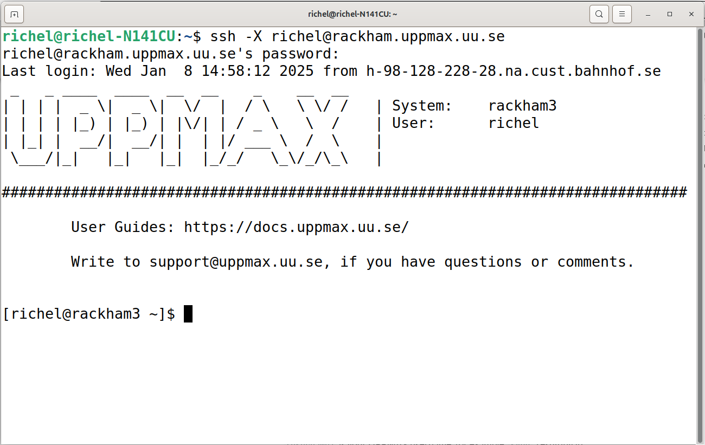

Frequently Asked Questions¶
When to follow the course¶
When should I follow this course?¶
When you want to get started with Python.
Especially at the start of any new programming language, having help is very useful: some error messages seem like complex, yet have simple solutions. A teacher helps you get past those first errors.
When should I consider to not follow this course?¶
These are the reasons to consider to not follow this course:
Reason 1: you want to learn advanced things¶
Tip
I feel like maybe some things were a little basic for me and I wish we had gotten into the more advanced stuff at the end. But this really reinforced the basics for me and I'm still glad that I did it.
A learner from this course (source)
When you have written your first scripts in Python and expect to learn new and more advanced things.
In this case, the course will go too slow for you.
However, you will probably be put to work by the teachers to help out other learners. If you like to test your own knowledge by teaching others, you will likely thrive in the course.
Reason 2: you have social anxiety¶
When you have social anxiety.
In this case, the course will be too social for you.
However, in this course, it is perfectly OK to give a wrong answer or to say 'I do not know'. This is what a former learner had to say on this:
Tip
As a learner, you do not want to be berated when giving an answer. Richel tries to gently deal with a wrong answer and he does this great
A learner from this course (source)
You are welcome to try and leave anytime you want. The course material is made for self-study too, with videos for all exercises. Do fill in the evaluation when you leave early :-)
Prerequisites¶
What are the prerequisites for following this course?¶
See prerequisites.
Why are there so many prerequisites?¶
Because the newsletter was rushed :-)
How can I check if I have registered?¶
Prefer a video?
You can see this question being answered in this YouTube video.
- Go to the course data page
- Go to the data of your course instance
- View the registrations table. If the MD5 hash of your email address is in that table, you are registered.
Why use an MD5 hash?
As a trade-off between privacy and pragmatism.
- Privacy: do not publish email addresses, however, oneone can find out if an email address is registered
- Pragmatism: a learner should be able to confirm he/she has been registered
How to use an MD5?
Get the MD5 hash of your email address.
For example, using
this website.
the email john.doe@gmail.com gives the MD5 hash of
e13743a7f1db7f4246badd6fd6ff54ff.
If this MD5 hash is found in the table of registrations,
hence, that email address is registered.
Besides that, you should have gotten a welcome email within a couple of days.
When it doubt, send an email to richel.bilderbeek@uppmax.uu.se :-)
How can I check if I have a user account on a Swedish academic HPC cluster?¶
When you can login at https://supr.naiss.se/.
How does that look like?
It should look similar to this:

I already have a project on a NAISS HPC cluster. Can I use that one?¶
Yes, absolutely!
How can I get a user account on a Swedish academic HPC cluster?¶
Register at https://supr.naiss.se/person/register/.
Which HPC cluster should I use?¶
There are the HPC clusters that have worked-out answers to the exercises:
| HPC cluster name | Description |
|---|---|
| Alvis | AI focussed, uses SSH keys for authentication |
| Bianca | Sensitive data, uses passwords and two-factor authentication |
| COSMOS | General-purpose, Lund university staff only |
| Dardel | General-purpose, uses SSH keys for authentication |
| Kebnekaise | General-purpose, Umeå university staff only |
| Rackham | General-purpose, Uppsala university staff only |
| Tetralith | General-purpose, uses passwords for authentication |
Without any additional information, Tetralith is recommended.
How can I check if I can login to an HPC cluster using SSH?¶
This depends on the HPC cluster you are using.
How does that look like?
This depends on your HPC cluster, but here is an example:

How can I login to an HPC cluster?¶
See the documentation of your HPC cluster.
Also, these videos may be useful:
| HPC cluster | Login method | Video |
|---|---|---|
| Alvis | SSH | here |
| Bianca | Website | here |
| Bianca | SSH | here |
| COSMOS | SSH | here |
| Dardel | SSH | here |
| Kebnekaise | SSH | here |
| Kebnekaise | Website | here |
| LUMI | SSH | None yet |
| Rackham | Local ThinLinc client | here |
| Rackham | SSH | here |
| Rackham | Website | here |
| Tetralith | SSH | here |
Is it OK if I can login to an HPC cluster using other methods?¶
Probably: yes
- Using a website: yes
- Using a local ThinLinc client: yes
- Using WinSCP: yes
How can I check if I have a good Zoom setup?¶
- You are in a room where you can talk
- You talk into a (standalone or headset) microphone
- Others can clearly hear you when you talk
- Others can see you
- You can hear others clearly when they talk
How can I get a good Zoom setup?¶
- Find/schedule/book a room where you can talk
- Buy a simple headset
What if I don't have a good Zoom setup? Is that OK?¶
No.
You will feel left out, as the course in highly interactive. It would be weird to the other learners.
Teaching¶
Why is the course learner-centered?¶
Because that is good teaching.
This course defines good teaching as 'evidence-based
methods to let learners acquire new skills and the monitoring
of this acquisition'. This means that it should be observed
that learners need more/less to time to practice and following
the schedule based on that. Learner-centered teaching has
an effect size from 0.36 [Hattie ranking]
or 0.64/0.70 [Cornelius-White, 2007][Hattie, 2012].
Or: it is useless to go faster than the learners can follow.
Lecturing is known to negatively affect learning [Hattie, 2023].
The teaching methods of this course follow the
evidence-based teaching cycle by [Bell, 2020a],
which allows learner-centered teaching.
Website¶
Why is the repository owner UPPMAX instead of NAISS?¶
Because NAISS does not have a GitHub owner page yet.
This repository will be transferred to a NAISS GitHub owner page when it exists.
Why is the repository name naiss_intro_python instead of naiss_intro_python?¶
Because the first name was used in a (rushed!) newsletter.
The name of this repository will be changed to naiss_intro_python
after its first iteration.
Why don't you just publish the Zoom room on the website?¶
As this course follow Zoom's recommended practices.
Other¶
What if I have another question?¶
Preferably:
- Add an issue at https://github.com/UPPMAX/naiss_intro_python. This requires a GitHub account and ensures your question is shown publicly to all of the course's teaching team
Else:
- Send an email to
richel.bilderbeek@uppmax.uu.se. There is no guarantee on a quick reply here.
References¶
[Bell, 2020a]Bell, Mike. The fundamentals of teaching: A five-step model to put the research evidence into practice. Routledge, 2020.[Cornelius-White, 2007]Cornelius-White, Jeffrey. "Learner-centered teacher-student relationships are effective: A meta-analysis." Review of educational research 77.1 (2007): 113-143.[Hattie, 2012]Hattie, John. Visible learning for teachers: Maximizing impact on learning. Routledge, 2012. The effect size of student centered learning can be found on page 157, which references[Cornelius-White, 2007]where an an effect size of 0.64 or 0.7 was found One example open access study is[Knight & Wood, 2005].[Hattie, 2023]Hattie, John. Visible learning: The sequel: A synthesis of over 2,100 meta-analyses relating to achievement. Routledge, 2023. The effect size of lecturing can be found on page 363, which has an effect size of -0.26 with a robustness index of 4 out of 5 and is based on 3 meta analyses using 273 studies using 27,296 people, measuring for 614 effects with a standard error of 0.08. One example open access study is[Knight & Wood, 2005].[Hattie ranking]The Hattie Ranking[Knight & Wood, 2005]Knight, Jennifer K., and William B. Wood. "Teaching more by lecturing less." Cell biology education 4.4 (2005): 298-310. paper